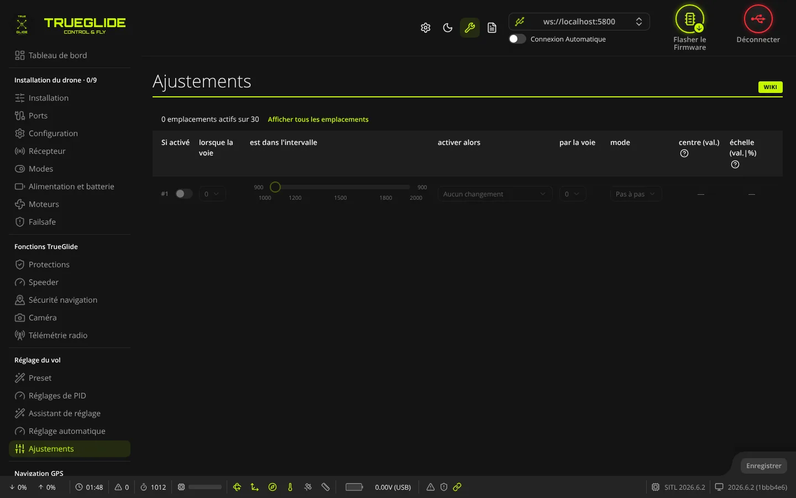
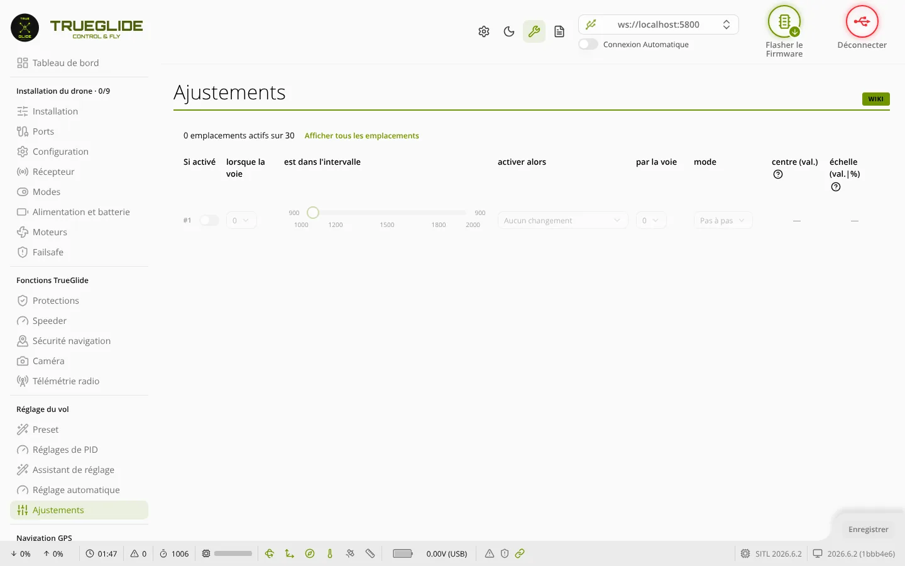

TRUE
TRUEAjustements
L'onglet Ajustements (groupe « Réglage du vol ») permet de changer certains réglages en vol depuis la radio : un interrupteur ou un potentiomètre modifie par exemple un gain PID, le profil de rates ou le multiplicateur maître, sans brancher le drone au PC.


Principe
Chaque ligne est un emplacement. Il se lit comme une phrase : « Si activé, lorsque la voie AUX… est dans l'intervalle …, activer alors telle fonction par la voie AUX… ». La première voie AUX sert d'autorisation (l'ajustement n'agit que quand elle est dans l'intervalle) ; la seconde est l'interrupteur ou le potentiomètre qui fait varier la valeur. Les deux peuvent être la même voie.
Le firmware garde 30 emplacements. En haut, le texte « … emplacements actifs sur … » les compte. Par défaut, seuls les emplacements actifs et le premier libre sont montrés ; Afficher tous les emplacements / Masquer les emplacements vides change l'affichage.
Les colonnes
- Si activé : numéro de l'emplacement (#1, #2…) et interrupteur. Activer un emplacement règle l'intervalle sur 1300–1700 s'il était vide. Le désactiver le remet à zéro.
- lorsque la voie : la voie AUX qui autorise l'ajustement (AUX 1, AUX 2…). La liste dépend du nombre de voies reçues par le récepteur.
- est dans l'intervalle : un curseur double de 900 à 2100 µs, par pas de 25. Les valeurs de début et de fin sont affichées de chaque côté. Un trait jaune montre la position actuelle de la voie, si la radio est reliée.
- activer alors : la fonction à ajuster. La liste se trie par ordre alphabétique et permet la recherche. Exemples : Ajustement du P Pitch & Roll, Ajustement du D Yaw, Sélection des profils de Rate, Multiplicateur maître des curseurs, Sélection du profil OSD, Ajustement de la luminosité des LED, Sélection du profil de batterie. Aucun changement ne fait rien.
- par la voie : la voie AUX qui fait varier la valeur.
- mode : voir ci-dessous.
- centre (val.) et échelle (val.|%) : modifiables seulement en mode Absolu, de 1 à 2000 pour le centre et de 0 à 2000 pour l'échelle. Ailleurs, la case affiche « — ».
Les modes
| Mode affiché | Quand | Effet |
|---|---|---|
| Pas à pas | fonctions de réglage d'une valeur (gains, rates, expo…), centre à 0 | la valeur part de sa valeur actuelle : voie au-dessus du milieu + 200 µs (1700 µs avec le milieu par défaut de 1500 µs), elle monte d'un pas ; voie sous le milieu − 200 µs (1300 µs), elle descend d'un pas |
| Absolu | mêmes fonctions, avec un centre | la position de la voie donne directement la valeur, dans la plage centre ± échelle. Exemple de l'aide : centre 50 et échelle 25 donnent 25 à 75, avec 50 au milieu de la course |
| Sélection | fonctions de choix : profil de rates, force du mode Horizon, PID-Audio, profil OSD, profil LED, luminosité des LED, multiplicateur maître des curseurs, profil de batterie | la position de la voie choisit une valeur ; affiché comme une étiquette, non modifiable |
Passer de Absolu à Pas à pas remet le centre et l'échelle à 0. Passer en Absolu met le centre à 50 s'il était à 0. Choisir une fonction de sélection remet le centre et l'échelle à 0.
Exemple : choisir le profil de rates avec un interrupteur 3 positions
- Activez un emplacement libre.
- lorsque la voie : la voie de l'interrupteur (par exemple AUX 3). Élargissez l'intervalle à toute la course (900 à 2100) pour que l'ajustement soit toujours autorisé.
- activer alors : Sélection des profils de Rate.
- par la voie : la même voie AUX 3.
- Cliquez sur Enregistrer, puis vérifiez dans l'onglet Réglages de PID que le profil de rates change avec l'interrupteur.
Enregistrer
Enregistrer (en bas à droite) envoie tous les emplacements au contrôleur de vol et les écrit dans sa mémoire permanente. Le bouton n'est actif que s'il y a des changements. Les voies AUX elles-mêmes se vérifient dans l'onglet Récepteur.